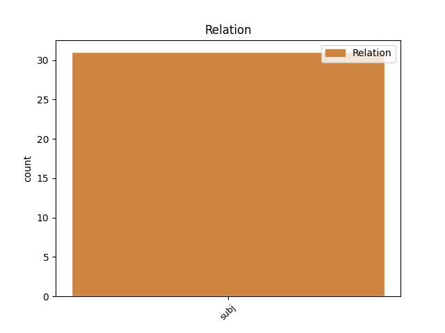
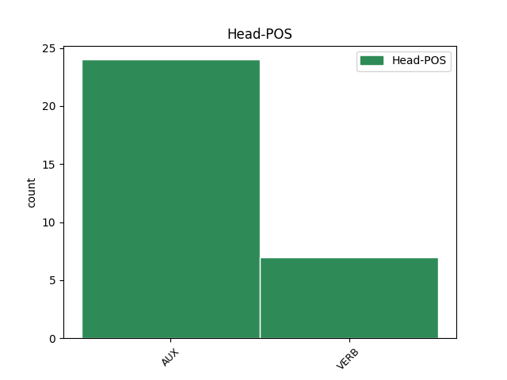
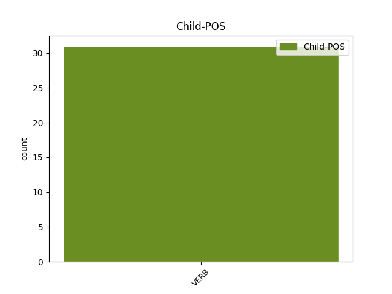

Distribution of features within this leaf



Agreement Rules sorted by frequency.
- When the dependent token is the subject(subj) of the head token, and the dependent token is VERB.
1 Իսկ _ _ _ _ 0 _ _ _
2 ով _ _ _ _ 0 _ _ _
3 այդ _ _ _ _ 0 _ _ _
4 կապն _ _ _ _ 0 _ _ _
5 ունակություն _ _ _ _ 0 _ _ _
6 չունի ունեմ VERB _ Aspect=Imp|Mood=Ind|Number=Sing|Person=3|Polarity=Neg|Subcat=Tran|Tense=Pres|VerbForm=Fin|Voice=Act 10 subj _ LTranslit=ownem|Translit=čowni
7 տեսնելու _ _ _ _ 0 _ _ _
8 , _ _ _ _ 0 _ _ _
9 ուզում _ _ _ _ 0 _ _ _
10 է եմ AUX _ Aspect=Imp|Mood=Ind|Number=Sing|Person=3|Polarity=Pos|Tense=Pres|VerbForm=Fin 0 _ _ _
11 փոփոխություն _ _ _ _ 0 _ _ _
12 , _ _ _ _ 0 _ _ _
13 բայց _ _ _ _ 0 _ _ _
14 չի _ _ _ _ 0 _ _ _
15 գիտակցում _ _ _ _ 0 _ _ _
16 , _ _ _ _ 0 _ _ _
17 որ _ _ _ _ 0 _ _ _
18 ինքը _ _ _ _ 0 _ _ _
19 գործ _ _ _ _ 0 _ _ _
20 ունի _ _ _ _ 0 _ _ _
21 անելու _ _ _ _ 0 _ _ _
22 , _ _ _ _ 0 _ _ _
23 որ _ _ _ _ 0 _ _ _
24 իր _ _ _ _ 0 _ _ _
25 ընտրությամբ _ _ _ _ 0 _ _ _
26 պատասխանատու _ _ _ _ 0 _ _ _
27 է _ _ _ _ 0 _ _ _
28 դրա _ _ _ _ 0 _ _ _
29 համար _ _ _ _ 0 _ _ _
30 : _ _ _ _ 0 _ _ _
Disagree Examples:
1 Ու _ _ _ _ 0 _ _ _
2 հասկանում _ _ _ _ 0 _ _ _
3 ես _ _ _ _ 0 _ _ _
4 ՝ _ _ _ _ 0 _ _ _
5 պիտի _ _ _ _ 0 _ _ _
6 որսվես _ _ _ _ 0 _ _ _
7 , _ _ _ _ 0 _ _ _
8 նույնն _ _ _ _ 0 _ _ _
9 է _ _ _ _ 0 _ _ _
10 թե _ _ _ _ 0 _ _ _
11 ՝ _ _ _ _ 0 _ _ _
12 պիտի _ _ _ _ 0 _ _ _
13 ապրես _ _ _ _ 0 _ _ _
14 , _ _ _ _ 0 _ _ _
15 ապրելն ապրել VERB _ Case=Nom|Definite=Def|Number=Coll|Polarity=Pos|Subcat=Intr|VerbForm=Gdv|Voice=Mid 18 subj _ LTranslit=aprel|Translit=apreln
16 ուրիշ _ _ _ _ 0 _ _ _
17 ձև _ _ _ _ 0 _ _ _
18 չունի ունեմ VERB _ Aspect=Imp|Mood=Ind|Number=Sing|Person=3|Polarity=Neg|Subcat=Tran|Tense=Pres|VerbForm=Fin|Voice=Act 0 _ _ _
19 ։ _ _ _ _ 0 _ _ _
1 Հեղափոխությունից _ _ _ _ 0 _ _ _
2 հետո _ _ _ _ 0 _ _ _
3 , _ _ _ _ 0 _ _ _
4 երբ _ _ _ _ 0 _ _ _
5 աղջիկը _ _ _ _ 0 _ _ _
6 , _ _ _ _ 0 _ _ _
7 փաստորեն _ _ _ _ 0 _ _ _
8 , _ _ _ _ 0 _ _ _
9 արդեն _ _ _ _ 0 _ _ _
10 երեք _ _ _ _ 0 _ _ _
11 տարեկան _ _ _ _ 0 _ _ _
12 էր _ _ _ _ 0 _ _ _
13 , _ _ _ _ 0 _ _ _
14 մանավանդ _ _ _ _ 0 _ _ _
15 ՝ _ _ _ _ 0 _ _ _
16 երբ _ _ _ _ 0 _ _ _
17 հիսունանոցներն _ _ _ _ 0 _ _ _
18 ու _ _ _ _ 0 _ _ _
19 հարյուրանոցները _ _ _ _ 0 _ _ _
20 փոխելու _ _ _ _ 0 _ _ _
21 պատմությունը _ _ _ _ 0 _ _ _
22 սկսվեց _ _ _ _ 0 _ _ _
23 , _ _ _ _ 0 _ _ _
24 ու _ _ _ _ 0 _ _ _
25 երբ _ _ _ _ 0 _ _ _
26 փողի _ _ _ _ 0 _ _ _
27 արժեքը _ _ _ _ 0 _ _ _
28 գնալով _ _ _ _ 0 _ _ _
29 զրո _ _ _ _ 0 _ _ _
30 էր _ _ _ _ 0 _ _ _
31 դառնում _ _ _ _ 0 _ _ _
32 , _ _ _ _ 0 _ _ _
33 իսկ _ _ _ _ 0 _ _ _
34 տան _ _ _ _ 0 _ _ _
35 վարձն _ _ _ _ 0 _ _ _
36 էլ _ _ _ _ 0 _ _ _
37 սկսել _ _ _ _ 0 _ _ _
38 էին _ _ _ _ 0 _ _ _
39 դոլարով _ _ _ _ 0 _ _ _
40 ուզել _ _ _ _ 0 _ _ _
41 , _ _ _ _ 0 _ _ _
42 ապրելը ապրել VERB _ Case=Nom|Definite=Def|Number=Coll|Polarity=Pos|Subcat=Intr|VerbForm=Gdv|Voice=Mid 43 subj _ LTranslit=aprel|Translit=aprelë
43 դժվարացավ դժվարանալ VERB _ Aspect=Perf|Mood=Ind|Number=Sing|Person=3|Polarity=Pos|Subcat=Intr|Tense=Past|VerbForm=Fin|Voice=Mid 0 _ _ _
44 ։ _ _ _ _ 0 _ _ _
1 Արդյունքում _ _ _ _ 0 _ _ _
2 բռնելը բռնել VERB _ Case=Nom|Definite=Def|Number=Coll|Polarity=Pos|Subcat=Tran|VerbForm=Gdv|Voice=Act 5 subj _ LTranslit=bṙnel|SpaceAfter=No|Translit=bṙnelë
3 ՝ _ _ _ _ 0 _ _ _
4 բռնում _ _ _ _ 0 _ _ _
5 են եմ AUX _ Aspect=Imp|Mood=Ind|Number=Plur|Person=3|Polarity=Pos|Tense=Pres|VerbForm=Fin 0 _ _ _
6 , _ _ _ _ 0 _ _ _
7 համա _ _ _ _ 0 _ _ _
8 կարում _ _ _ _ 0 _ _ _
9 չեն _ _ _ _ 0 _ _ _
10 մի _ _ _ _ 0 _ _ _
11 խելքը _ _ _ _ 0 _ _ _
12 գլխին _ _ _ _ 0 _ _ _
13 դատավոր _ _ _ _ 0 _ _ _
14 գտնեն _ _ _ _ 0 _ _ _
15 ողջ _ _ _ _ 0 _ _ _
16 տերությունումը _ _ _ _ 0 _ _ _
17 , _ _ _ _ 0 _ _ _
18 որ _ _ _ _ 0 _ _ _
19 էդ _ _ _ _ 0 _ _ _
20 լեռնցի _ _ _ _ 0 _ _ _
21 թշնամուն _ _ _ _ 0 _ _ _
22 մարդավայել _ _ _ _ 0 _ _ _
23 դատի _ _ _ _ 0 _ _ _
24 , _ _ _ _ 0 _ _ _
25 տանեն _ _ _ _ 0 _ _ _
26 կախեն _ _ _ _ 0 _ _ _
27 , _ _ _ _ 0 _ _ _
28 իրենք _ _ _ _ 0 _ _ _
29 նրանից _ _ _ _ 0 _ _ _
30 պրծնեն _ _ _ _ 0 _ _ _
31 , _ _ _ _ 0 _ _ _
32 նա _ _ _ _ 0 _ _ _
33 էլ _ _ _ _ 0 _ _ _
34 ՝ _ _ _ _ 0 _ _ _
35 սրանցից _ _ _ _ 0 _ _ _
36 ։ _ _ _ _ 0 _ _ _
1 Կյանքում _ _ _ _ 0 _ _ _
2 մարդուն _ _ _ _ 0 _ _ _
3 գիժ _ _ _ _ 0 _ _ _
4 հռչակելը հռչակել VERB _ Case=Nom|Definite=Def|Number=Coll|Polarity=Pos|Subcat=Tran|VerbForm=Gdv|Voice=Act 6 subj _ LTranslit=hṙčakel|Translit=hṙčakelë
5 զվարճալի _ _ _ _ 0 _ _ _
6 չէ եմ AUX _ Aspect=Imp|Mood=Ind|Number=Sing|Person=3|Polarity=Neg|Tense=Pres|VerbForm=Fin 0 _ _ _
7 : _ _ _ _ 0 _ _ _
1 Որովհետև _ _ _ _ 0 _ _ _
2 գտնում _ _ _ _ 0 _ _ _
3 եմ _ _ _ _ 0 _ _ _
4 , _ _ _ _ 0 _ _ _
5 որ _ _ _ _ 0 _ _ _
6 , _ _ _ _ 0 _ _ _
7 մեղմ _ _ _ _ 0 _ _ _
8 ասած _ _ _ _ 0 _ _ _
9 , _ _ _ _ 0 _ _ _
10 քաղքենություն _ _ _ _ 0 _ _ _
11 է եմ AUX _ Aspect=Imp|Mood=Ind|Number=Sing|Person=3|Polarity=Pos|Tense=Pres|VerbForm=Fin 0 _ _ _
12 իմաստունի _ _ _ _ 0 _ _ _
13 նման _ _ _ _ 0 _ _ _
14 ձեռք _ _ _ _ 0 _ _ _
15 թափ _ _ _ _ 0 _ _ _
16 տալը տալ VERB _ Case=Nom|Definite=Def|Number=Coll|Polarity=Pos|Subcat=Tran|VerbForm=Gdv|Voice=Act 11 subj _ LTranslit=tal|SpaceAfter=No|Translit=talë
17 . _ _ _ _ 0 _ _ _
18 որպես _ _ _ _ 0 _ _ _
19 թե _ _ _ _ 0 _ _ _
20 ՝ _ _ _ _ 0 _ _ _
21 ոչինչ _ _ _ _ 0 _ _ _
22 անել _ _ _ _ 0 _ _ _
23 հնարավոր _ _ _ _ 0 _ _ _
24 չէ _ _ _ _ 0 _ _ _
25 ։ _ _ _ _ 0 _ _ _